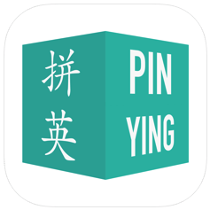

Project - PinYing

PinYing is an app that aims to help Chinese improve American English pronounciations using a traditional method of pronouncing Chinese characters.
Challenge
Some Chinese people are interested in improving their English pronounciation but do not have access to real native speakers. Most of the existing online platforms that provide the foreign language learning service are in the form of lessons. For users who want to improve pronounciations in their fragmented time at anywhere, a mobile application seems a good solution. Plus, methods based on phonetic symbols are not helpful for people who have difficulty in differentiating or pronouncing the symbols.
Goal
To provide users who have little English background to learn authentic American English pronounciation using a traditional method of indicating the pronunciation of Chinese characters.Work
The project team consisted of 15 programmers, designers/researchers and a professor studying Chinese literature. I joined the team when the 1.0 version app was just launched. My job as a UX researcher in the team was to provide feedback and suggestions to support the developers making the 2.0version. My work included but not limited to- Advertizing the app and inviting Chinese to test it
- Collecting preliminary data by interviewing the users
- Making tutorials about how the app works
Examples
An introductory tutorial
Video recorded edited and voice over by me.